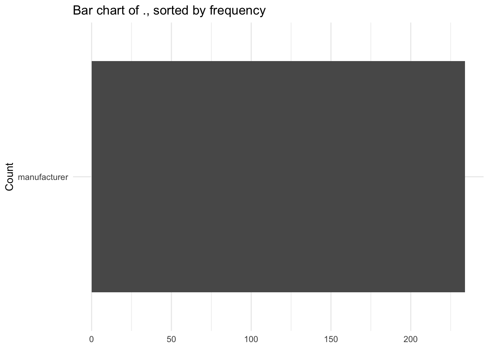
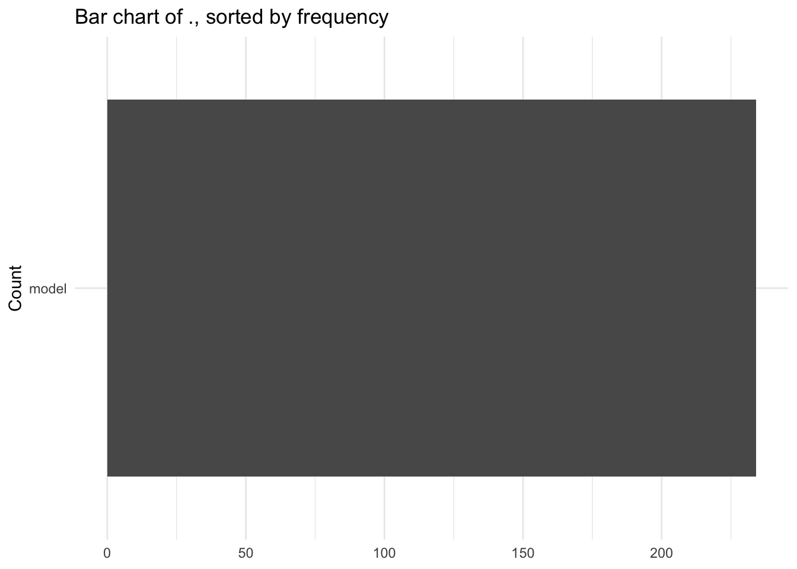
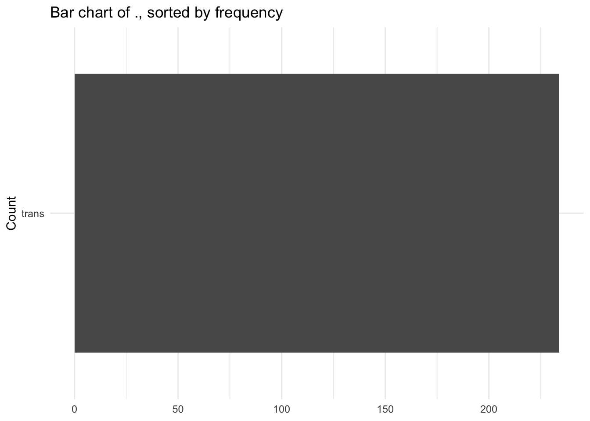

library(tidyverse)
library(purrr)
remove_outliers <- function(data, ..., sd_thresh = 3) {
vars <- enquos(...)
# get non numeric variables
non_numeric_var <- data |>
select(...) |>
map_lgl(~ !is.numeric(.x)) |>
keep(identity) |>
names()
if(length(non_numeric_var) > 0) {
stop("non-numeric columns detected: ",
str_c(non_numeric_var, collapse = ", "))
}
data |>
mutate(across(.cols = c(...),
.fns = ~ (.x / mean(.x)) / sd(.x),
.names = "{.col}_scaled")
) |>
filter(if_any(.cols = ends_with("scaled"),
.fns = ~ .x < sd_thresh)) |>
select(- ends_with("scaled"))
}Spicy Function
Exercise 1: Write a function that removes outliers in a dataset. The user should be able to supply the dataset, the variables to remove outliers from, and a threshold on the number of SDs away from the mean used to define outliers. Hint 1: You will need to calculate a z-score to filter the values! Hint 2: You might want to consider specifying a default value (e.g., 3) for sd_thresh.
website I found helpful -> https://rlang.r-lib.org/reference/enquo.html
Testing Your Function!
## Testing how your function handles multiple input variables
remove_outliers(diamonds,
price,
x,
y,
z)# A tibble: 53,940 × 10
carat cut color clarity depth table price x y z
<dbl> <ord> <ord> <ord> <dbl> <dbl> <int> <dbl> <dbl> <dbl>
1 0.23 Ideal E SI2 61.5 55 326 3.95 3.98 2.43
2 0.21 Premium E SI1 59.8 61 326 3.89 3.84 2.31
3 0.23 Good E VS1 56.9 65 327 4.05 4.07 2.31
4 0.29 Premium I VS2 62.4 58 334 4.2 4.23 2.63
5 0.31 Good J SI2 63.3 58 335 4.34 4.35 2.75
6 0.24 Very Good J VVS2 62.8 57 336 3.94 3.96 2.48
7 0.24 Very Good I VVS1 62.3 57 336 3.95 3.98 2.47
8 0.26 Very Good H SI1 61.9 55 337 4.07 4.11 2.53
9 0.22 Fair E VS2 65.1 61 337 3.87 3.78 2.49
10 0.23 Very Good H VS1 59.4 61 338 4 4.05 2.39
# ℹ 53,930 more rows## Testing how your function handles an input that isn't numeric
remove_outliers(diamonds,
price,
color)Error in remove_outliers(diamonds, price, color): non-numeric columns detected: color## Testing how your function handles a non-default sd_thresh
remove_outliers(diamonds,
price,
x,
y,
z,
sd_thresh = 2)# A tibble: 53,940 × 10
carat cut color clarity depth table price x y z
<dbl> <ord> <ord> <ord> <dbl> <dbl> <int> <dbl> <dbl> <dbl>
1 0.23 Ideal E SI2 61.5 55 326 3.95 3.98 2.43
2 0.21 Premium E SI1 59.8 61 326 3.89 3.84 2.31
3 0.23 Good E VS1 56.9 65 327 4.05 4.07 2.31
4 0.29 Premium I VS2 62.4 58 334 4.2 4.23 2.63
5 0.31 Good J SI2 63.3 58 335 4.34 4.35 2.75
6 0.24 Very Good J VVS2 62.8 57 336 3.94 3.96 2.48
7 0.24 Very Good I VVS1 62.3 57 336 3.95 3.98 2.47
8 0.26 Very Good H SI1 61.9 55 337 4.07 4.11 2.53
9 0.22 Fair E VS2 65.1 61 337 3.87 3.78 2.49
10 0.23 Very Good H VS1 59.4 61 338 4 4.05 2.39
# ℹ 53,930 more rowsVector Functions
Question 1: The rescale01() function below performs a min-max scaling to standardize a numeric vector, but infinite values are left unchanged. Rewrite rescale01() so that -Inf is mapped to 0, and Inf is mapped to 1? *Hint: This seems like a great place for case_when()!
rescale01 <- function(x) {
rng <- range(x, na.rm = TRUE, finite = TRUE)
(x - rng[1]) / (rng[2] - rng[1])
case_when(x == -Inf ~ 0,
x == Inf ~ 1,
TRUE ~ scaled)
}Question 2: Write a function that accepts a vector of birthdates and computes the age of each person in years.
library(tidyverse)
library(lubridate)
compute_age <- function(dates){
today <- Sys.Date()
age <- as.numeric(difftime(today,
dates,
units = "weeks")) / 52.25
return(age)
}Question 3: Write a function that computes the variance and skewness of a numeric vector. Feel free to look up the definitions on Wikipedia or elsewhere!
var_and_skew <- function(vec){
n <- length(vec)
s <- sd(vec)
var <- sum((vec - mean(vec))^2 / (n-1))
skew <- sum((vec - mean(vec))^3 / (n-1)*s^3)
return(list(variance = var, skewness = skew))
}Question 4: Write a function called both_na() which takes two vectors of the same length and returns the number of positions that have an NA in both vectors.
both_na <- function(vec1, vec2){
sum(is.na(vec1) + is.na(vec2))
}Data Frame Functions
Question 5: Insert the data frame function you wrote from Lab 6 (either Exercise 1 or Exercise 2).
remove_outliers <- function(data, ..., sd_thresh = 3) {
vars <- enquos(...)
# check variable type
for (var in vars) {
col <- eval_tidy(var, data)
if (!is.numeric(col)) {
return(NA)
}
}
keep <- rep(TRUE, nrow(data))
for (var in vars) {
col <- eval_tidy(var, data)
z <- (col - mean(col)) / sd(col)
keep <- keep & abs(z) <= sd_thresh
}
return(data[keep, ])
}For Questions 6 - 10 you will write different functions which work with data similar to the nycflights13 data.
Question 6: Write a filter_severe() function that finds all flights that were cancelled (i.e. is.na(arr_time)) or delayed by more than an hour.
library(nycflights13)
filter_severe <- function(data){
severe_data <- filter(is.na(arr_time) | arr_delay > 60)
}Question 7: Write a summarize_severe() function that counts the number of cancelled flights and the number of flights delayed by more than an hour.
summarize_severe <- function(severe_data){
cancelled <- sum(is.na(arr_time))
delayed <- nrow(severe_data) - cancelled
return(list(cancelled = cancelled, delayed = delayed))
}Question 8: Modify your filter_severe() function to allow the user to supply the number of hours that should be used to filter the flights that were cancelled or delayed.
severe_modified <- function(data, hours){
severe_data <- filter(is.na(arr_time) | arr_delay > hours)
}Question 9: Write a summarize_weather() function that summarizes the weather to compute the minimum, mean, and maximum, of a user supplied variable.
summarize_weather <- function(var){
min <- min(var)
mean <- mean(var)
max <- max(var)
return(list(minimum = min, mean = mean, maximum = max))
}Question 10: Write a standardize_time() function that converts the user supplied variable that uses clock time (e.g., dep_time, arr_time, etc.) into a decimal time (i.e. hours + (minutes / 60)).
standardize_time <- function(time_var){
hours <- time_var %/% 100
minutes <- time_var %% 100
time <- hours + (minutes / 60)
return(time)
}Plotting Functions
You might want to read over the Plot Functions section of R for Data Science
Question 11: Build a sorted_bars() function which:
- takes a data frame and a variable as inputs and returns a vertical bar chart
- sorts the bars in decreasing order (largest to smallest)
- adds a title that includes the context of the variable being plotted
Hint 1: The fct_infreq() and fct_rev() functions from the forcats package will be helpful for sorting the bars! Hint 2: The englue() function from the rlang package will be helpful for adding a variable’s name into the plot title!
library(purrr)
library(rlang)
Attaching package: 'rlang'The following objects are masked from 'package:purrr':
%@%, flatten, flatten_chr, flatten_dbl, flatten_int, flatten_lgl,
flatten_raw, invoke, splicesorted_bars <- function(data, var){
data |>
mutate({{ var }} := fct_rev(fct_infreq({{ var }}))) |>
ggplot(aes(y = {{var}})) +
geom_bar() +
labs(title = englue("Bar chart of {{ var }}, sorted by frequency"),
x = NULL,
y = "Count") +
theme_minimal()
}Iteration
Alright, now let’s take our plotting function and iterate it!
Question 12: Make a sorted barplot for every character variable in the mpg dataset (built into ggplot2).
# Step 1: Convert character columns to factors
mpg_factored <- mpg |>
mutate(across(where(is.character), as.factor))
# Step 2: Generate bar charts for each character/factor variable
mpg_factored |>
select(where(is.factor)) |>
names() |>
map(~ sorted_bars(mpg_factored, .))[[1]]
[[2]]
[[3]]
[[4]]
[[5]]
[[6]]Contributing to the R for Data Science Community!
The functions you wrote for exercises 1-10 came from R for Data Science. You could consider making a pull request to the repository for the solutions!
Citation
BibTeX citation:
@online{potkey2025,
author = {Potkey, Sydney},
title = {Lab 6},
date = {2025-06-04},
url = {https://SydneyPotkey.github.io/Posts/06_04_25_Lab6/},
langid = {en}
}
For attribution, please cite this work as:
Potkey, Sydney. 2025. “Lab 6.” June 4, 2025. https://SydneyPotkey.github.io/Posts/06_04_25_Lab6/.